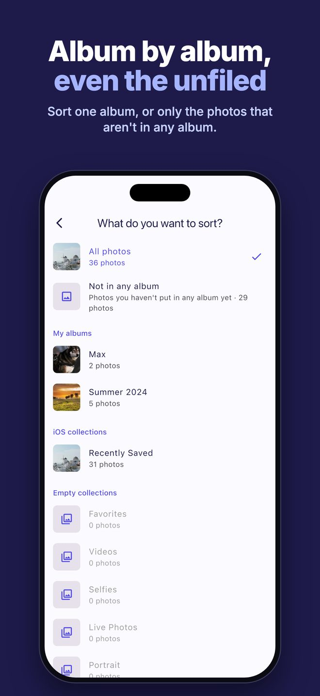
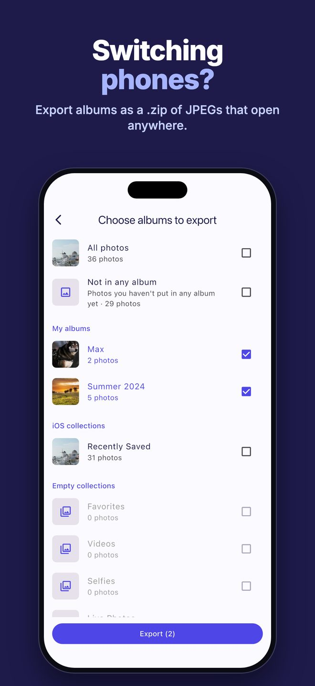
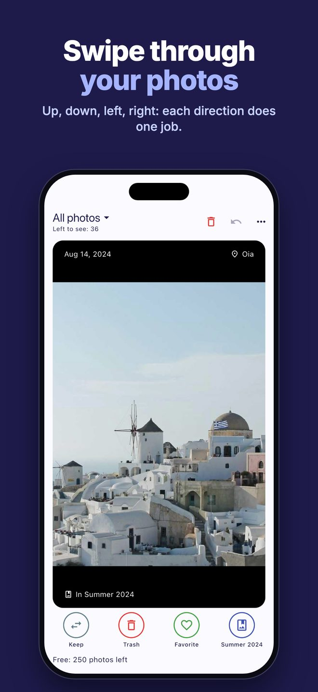
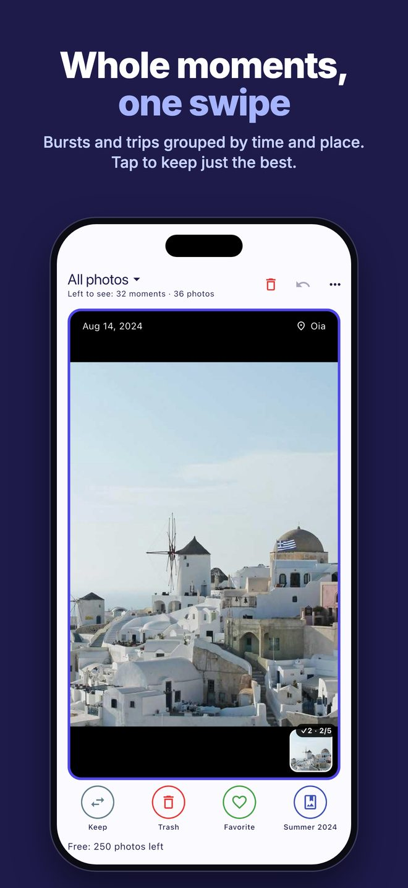
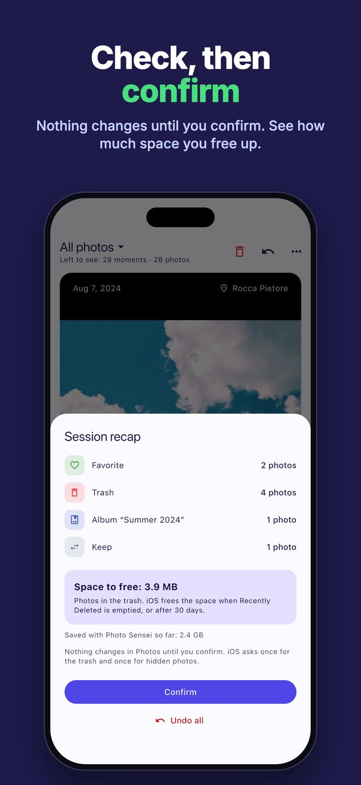

Album by album
Sort your whole library, only the photos that aren't in any album yet, or a single album such as your chat downloads or Screenshots. Every photo shows which albums it's already in.
Photo Sensei shows you your photos one by one. Swipe up, down, left or right and each photo is sorted — you choose what each direction does.
Download on the App StoreFree for your first 250 photos · then unlock once for €0.99 · no subscription, ever

Sort your whole library, only the photos that aren't in any album yet, or a single album such as your chat downloads or Screenshots. Every photo shows which albums it's already in.

Export one or more albums as a single .zip file, one folder per album, with JPEGs that open anywhere — even on Windows. Exporting never deletes anything.

Keep, add to Favorites, move to the trash, add to an album, remove from an album or hide. Each direction does what you choose, and every decision can be undone.

Photos taken minutes apart in the same place become one card, with the place and date. Tap the ones you want to keep: the swipe moves only those.

Nothing changes until you confirm the session recap, which also shows how much space you free up. Undo the whole session in one tap.
Photo Sensei works entirely on your iPhone. No account, no cloud, no tracking, no ads. Your photos never leave your device, and the App Store privacy label says “Data Not Collected”.
No. Every swipe is only a choice: nothing changes in Photos until you confirm the session recap. Then photos in the trash move to Recently Deleted after a single iOS confirmation, and you can recover them from the Photos app for 30 days.
No. The first 250 photos are free, then a single in-app purchase (€0.99 in Italy; the App Store adjusts the price in other countries) unlocks Photo Sensei forever. No ads.
Never. The app has no account and sends nothing to us; only a photo’s coordinates go to Apple to show the place name. When you export a .zip, the file is created on your iPhone and goes only where you choose to share it.
Yes. Undo reverses the last decision, including adding to or removing from an album. Photos marked for deletion or hiding stay untouched until you confirm.
JPEG copies of the photos in the albums you pick, one folder per album. JPEG opens on any computer, including Windows.
Any iPhone with iOS 13 or later. Albums and hiding need full access to your photos.
Problems or ideas? Write to info@optiapp.it.